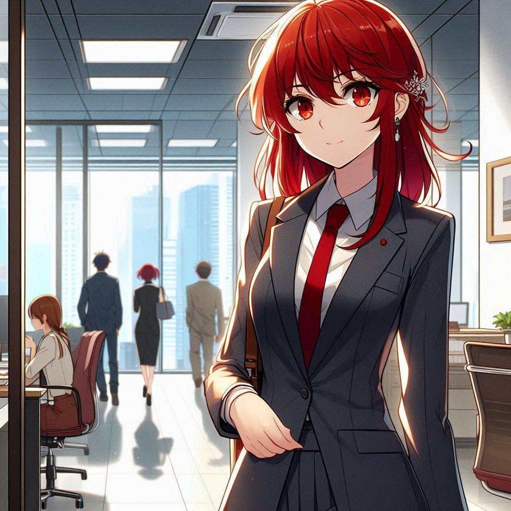
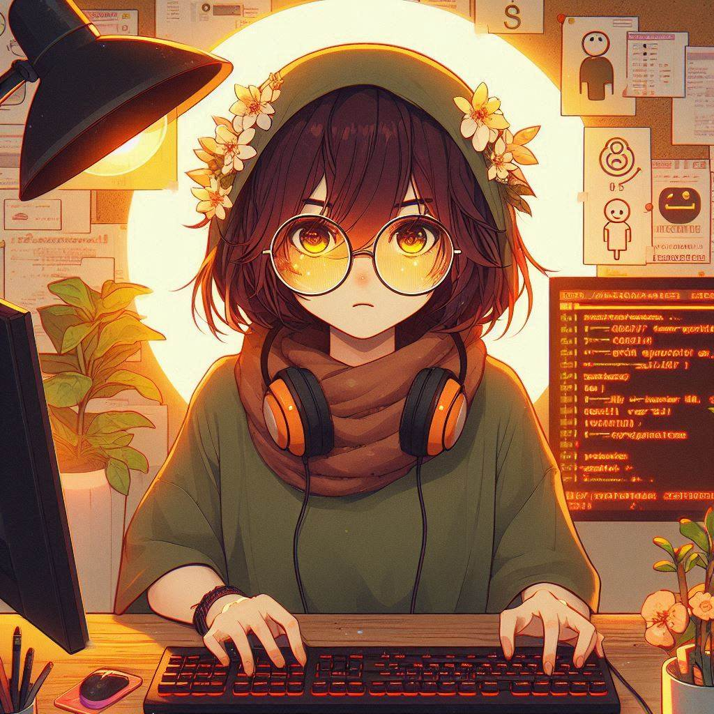

-
Seu Clope
Descrição
Seu Clope é um veterano da programação que detesta novas linguagens, preferindo as clássicas como COBOL e Assembly. Meticuloso e preciso, ele valoriza a clareza e a simplicidade, dedicando horas para criar códigos eficientes e sem dependências excessivas. Em seu escritório, cercado de hardware vintage e livros técnicos, ele trabalha com editores de texto simples, planejando cada linha de código com a precisão de um cirurgião. Embora frequentemente em conflito com colegas mais jovens, Seu Clope ensina valiosas lições sobre a arte da programação com seu vasto conhecimento e dedicação.
-
Vamplena
Descrição
Vamplena é uma jovem programadora brilhante e inovadora, especialista em novas linguagens e frameworks. Com seu estilo vibrante e amor por gadgets de última geração, ela navega facilmente entre Python, JavaScript, Rust e outras tecnologias emergentes. Diferente de Seu Clope, Vamplena prefere ambientes de desenvolvimento integrados sofisticados para prototipar e implementar soluções rapidamente. Embora suas filosofias frequentemente entrem em conflito, a colaboração entre Vamplena e Seu Clope une tradição e inovação, demonstrando que a programação pode equilibrar precisão e criatividade.
-
Jubiléia
Descrição
Jubiléia é uma jovem e talentosa gerente de projetos que rapidamente se destacou no mundo da programação. Com uma energia contagiante e habilidades de liderança inatas, ela utiliza metodologias ágeis para garantir a eficiência dos projetos. Seu estilo inclusivo e encorajador cria um ambiente motivador, onde todos se sentem valorizados. Equilibrando as tradições de Seu Clope com as inovações de Vamplena, Jubiléia demonstra maturidade e habilidade para mediar conflitos, inspirando confiança e garantindo o sucesso e a qualidade de cada projeto.
-
Tempestade Solar
Descrição
Tempestade Solar é uma hacker brilhante e implacável, conhecida por sua habilidade técnica excepcional e seu poder sobrenatural de desencadear explosões solares nos sistemas que invade. Com sua ambição desmedida e falta de escrúpulos, ela utiliza suas habilidades para causar caos e destruição, deixando um rastro de devastação digital por onde passa. Seu controle preciso sobre essas explosões a torna uma adversária formidável, desafiando constantemente a equipe de Seu Clope, Vamplena e Jubiléia em sua busca pelo domínio completo.
-
Loggineto
Descrição
Loggineto é um vilão digital sinistro, dotado do poder de redirecionar fluxos de dados com sua força de vontade, concedendo-lhe domínio absoluto sobre a segurança digital. Com sua habilidade de manipular informações como marionetes, ele cria ilusões, distorce códigos e corrompe sistemas com uma inteligência cruel e meticulosa. Sua busca por poder e caos representa uma ameaça constante para a equipe de Seu Clope, Vamplena e Jubiléia
-
Professor Cafeze
Descrição
Líder dos X-devs é um mentor para desenvolvedores iniciantes, guiando-os com sua mente excepcional e um café sempre à mão. Ele possui habilidades telepáticas que lhe permitem transmitir conhecimento sobre programação na mente dos novatos, acelerando sua aprendizagem.
-->